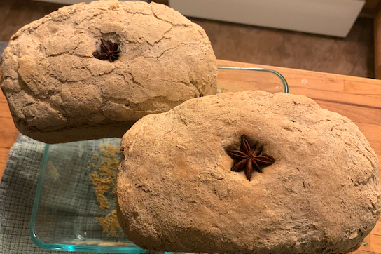

Limpa Bread

A traditional Swedish rye loaf, lightly sweetened, gently spiced, and lovingly savored.
A hearty slice serves as the perfect vessel for salty cheeses or creamy butter.
The flavor will forever remind me of my Mormor and her sunny kitchen table at the farm.
Ingredients
- 4 c water
- 1 c brown sugar
- 2 tbsp shortening
- 2 tsp caraway seeds
- 1 tbsp orange zest, grated
- 1 tbsp anise seeds
- 1 pkg dry active yeast
- 6-6.5 c all purpose flour, sifted
- 2 tsp salt
- 4-4.5 c 100% rye flour
Steps
- Combine in saucepan: Water, brown sugar, shortening, caraway seeds,
grated orange zest and anise seeds. Boil for 3 minutes; allow to cool slightly.
- When the mixture becomes lukewarm, add the yeast and stir thoroughly. Add enough of the sifted flour to the mixture
to make a soft dough. Place dough in warm place. Cover and allow to rise for 1 1/2 to 2 hours.
- Add the salt and enough of the rye flour to make a stiff dough. Divide into two equal portions. Put in separate bowls, cover
and allow to rise again for 2 hours in a warm, draft-free place.
- Knead each portion for 5 minutes until smooth and elastic. Shape into loaves and place in greased loaf pans. Cover and let
rise again for 30 minutes. Bake in preheated 350 degree oven for 1 hour.
Remove immediately, turn out of pans and cool on a wire rack.
Note from Grampa Jim: The texture and taste of the bread should be OK, but you probably should do at least one test run to
see if you are pleased with the crust and the shape of the loaves. You might think a bit softer crust would be better. I have
several smaller loaf pans (4 1/2 x 8 1/2 inches) and one larger, 5 1/4 x 9 1/4 pan. Two smaller loaves tend to spill over the
edges in somewhat unsightly fashion. And 1/2 of the dough doesn't rise any above the edges of the bigger pan. Neither achieves
the evenly rounded look of a classic loaf shape.